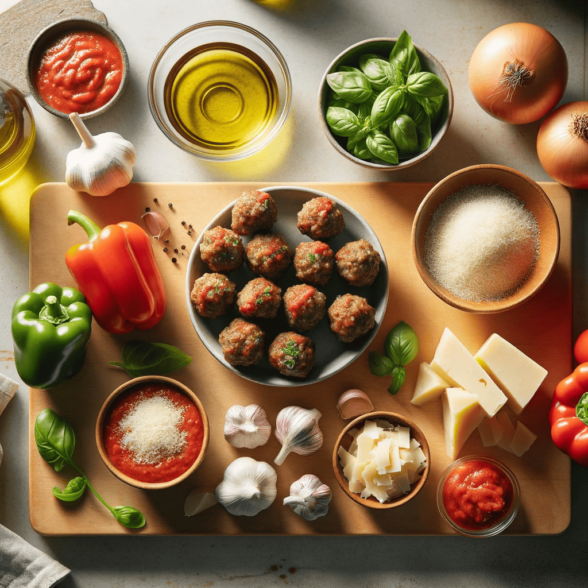
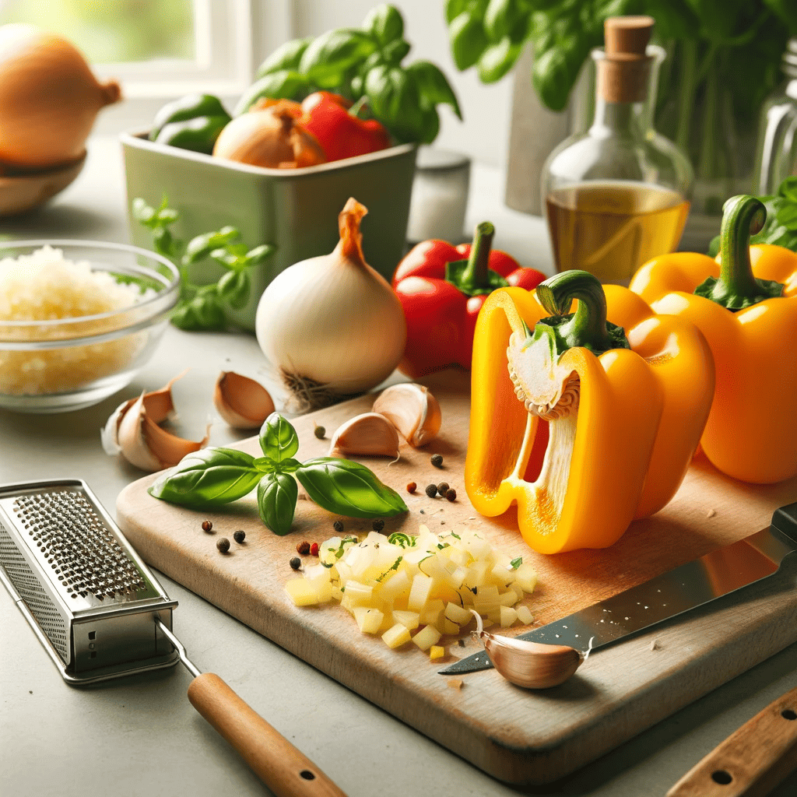
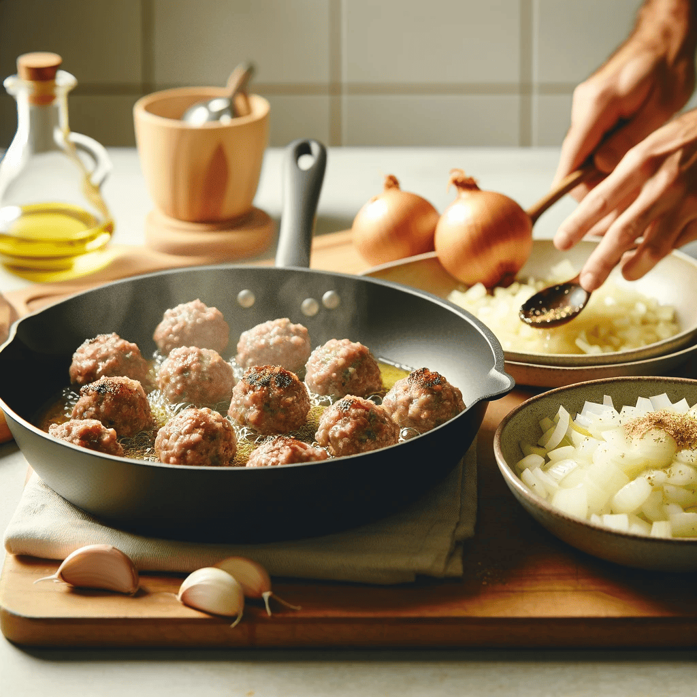
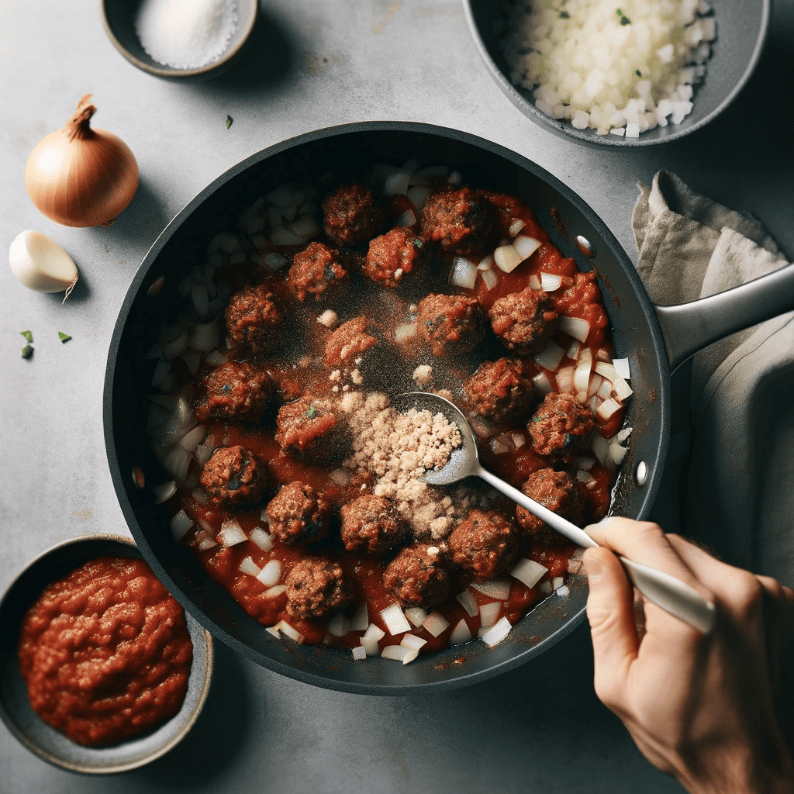
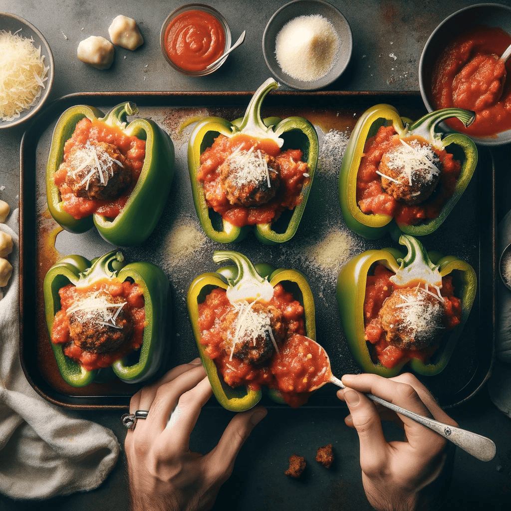
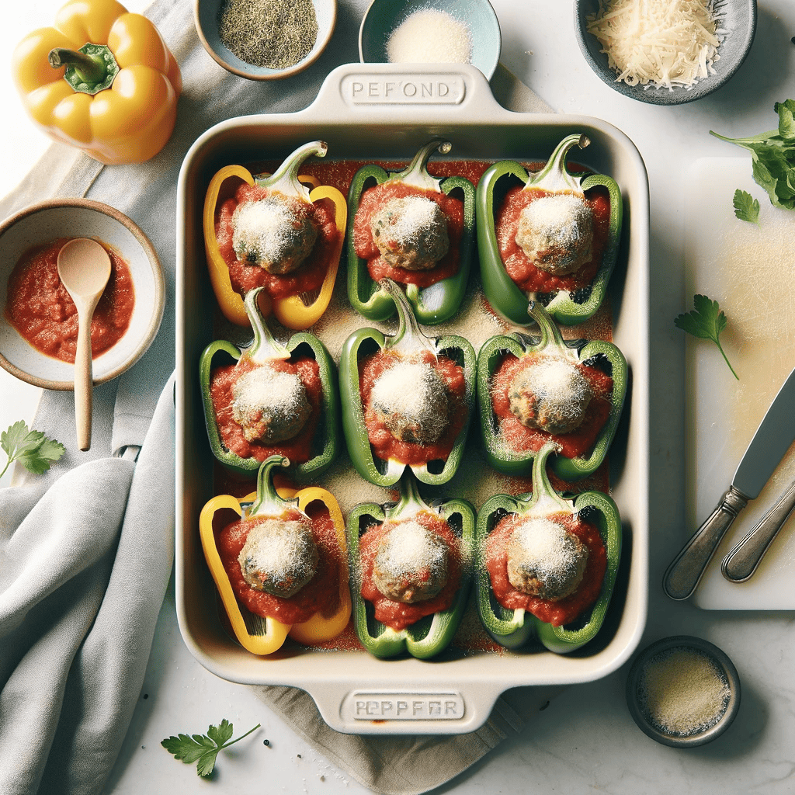
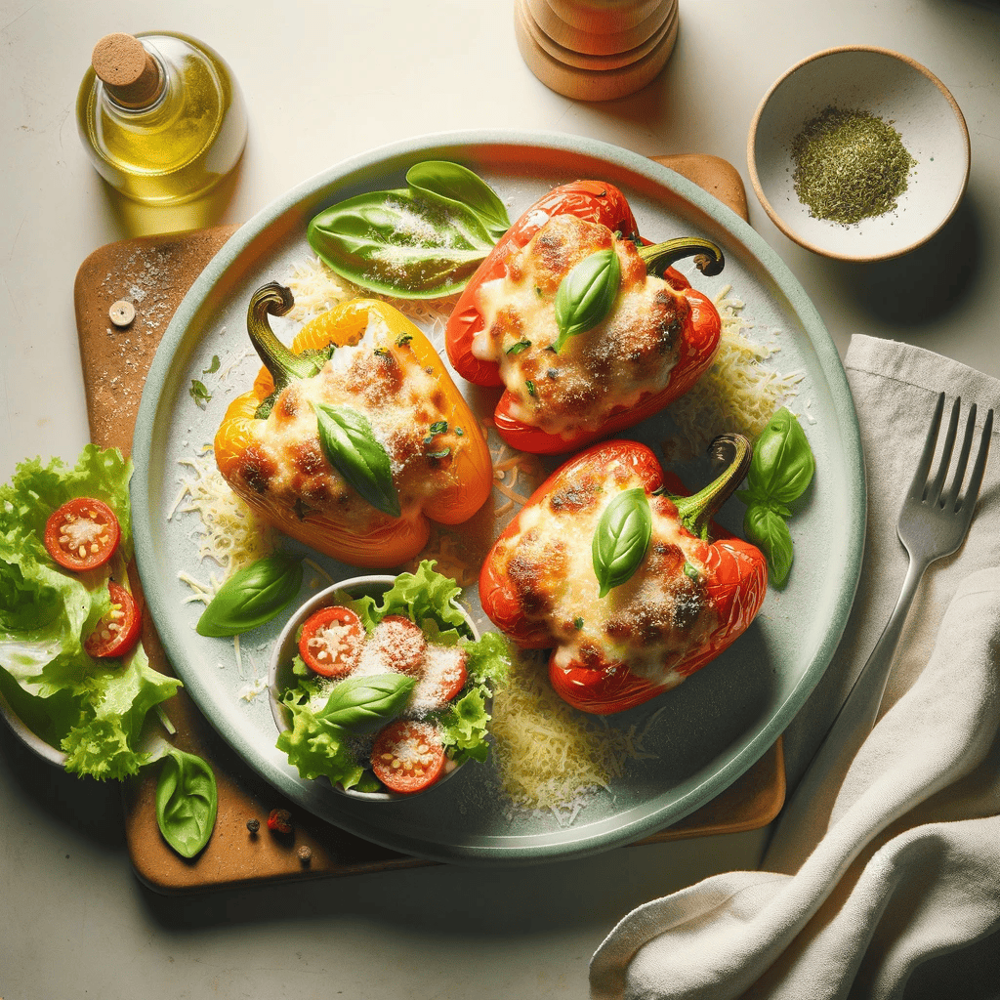

Stuffed Bell Peppers with Beyond Meat and Marinara

Ingredients
- Bell peppers
- Beyond Meat meatballs
- Marinara sauce
- Fresh garlic
- Olive oil
- Grated Parmesan cheese
- Fresh basil
- Onion
Recipe Steps
Step 1: Preparation of Ingredients

- Wash and prepare the bell peppers.
- Dice the onion and mince the garlic.
- Grate the Parmesan cheese and chop the fresh basil.
Step 2: Pre-cooking Meatballs and Vegetables

- Cook the Beyond Meat meatballs as per package instructions, then crumble or chop them.
- In a pan, sauté the diced onions and minced garlic in olive oil until translucent.
Step 3: Mixing the Filling

- To the sautéed onions and garlic, add the crumbled Beyond Meat meatballs and some marinara sauce. Stir the mixture and cook for a few minutes.
Step 4: Stuffing the Peppers

- Fill each bell pepper with the meatball and marinara mixture.
- Top each stuffed pepper with a spoonful of marinara sauce and a sprinkle of grated Parmesan cheese.
Step 5: Baking

- Preheat your oven to 375°F (190°C).
- Place the stuffed peppers in a baking dish and bake in the preheated oven for about 30-35 minutes, or until the peppers are tender.
Step 6: Final Touches and Serving

- Once baked, garnish the stuffed bell peppers with fresh basil.
- Serve the stuffed bell peppers hot, perhaps with a side of crusty bread or a light salad.